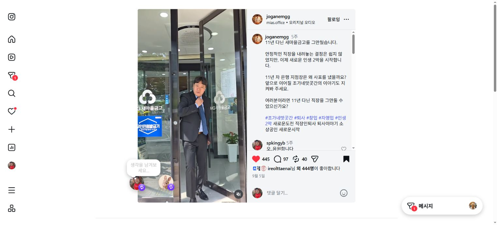
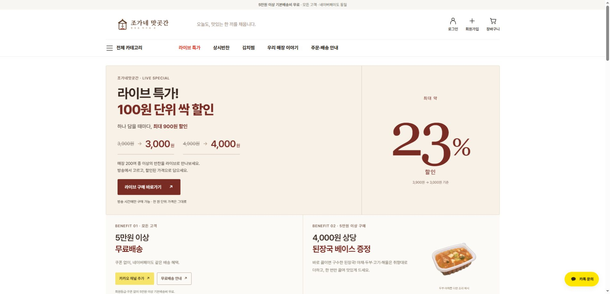
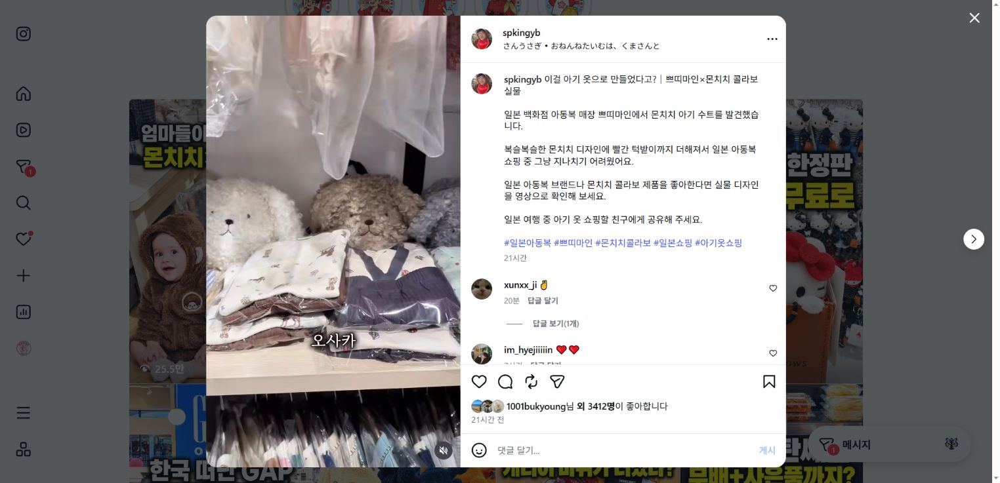

장사하느라 SNS까지 챙기기 버겁다면
메뉴를 한 끼의
상황으로 보여주기
“무엇을 올리지?”를 매일 고민하기보다, 퇴근 후 저녁·점심 샐러드처럼 고객이 실제로 먹는 순간에 맞춰 기획합니다.
TIGER COMMERCE LAB / 김해 반찬·샐러드
오늘 메뉴를 찾을 사람, 다음에도 주문할 사람.
우리 가게를 발견하고 다시 찾을 이유를 만듭니다.
실제 반찬가게와 자체 쇼핑 브랜드를 운영하는 타이거의 제안입니다.
김해 · 반찬/샐러드 · SNS 마케팅 요청 기준
매장 계정 확인 전 제안이며, 실제 목표·촬영 여건을 상담 후 확정합니다.
조회수 확인일·범위는 아래 실제 화면에 표시했습니다.
01 / 가까운 업종의 실제 운영 사례
조가네맛곳간은 타이거가 SNS와 자사몰 운영을 맡고 있는 실제 고객사입니다.
사장님의 이야기, 메뉴, 고객이 다시 연결될 통로를 함께 운영합니다.

실제 릴스 보기 ↗“11년 다닌 새마을금고를 그만뒀습니다.”
메뉴만 보여주는 데서 나아가, 가게를 시작한 사람의 이야기를 콘텐츠로 담았습니다.
사장님 이야기 릴스 누적 조회
2026.10.16 공개 표시 기준
조회수는 콘텐츠 반응입니다. 주문·매출 증가를 뜻하지 않으며, 동일한 성과를 보장하지 않습니다.

조가네 화면은 실제 운영 경험입니다. 카카오톡채널 구축·운영, 자사몰 구축, 라이브 진행은 별도 업무이며 아래 월 운영료에 자동 포함되지 않습니다.
몬치치 아동복 릴스 누적 조회
2026.10.17 공개 표시 기준
상품을 고를 이유를 콘텐츠로 보여주고, 프로필에서 자사몰과 라이브 안내로 이어지도록 운영합니다. 식품과 동일 업종은 아니지만, 콘텐츠·브랜딩·판매채널을 직접 연결하는 경험입니다.
자체 브랜드 사례이며 고객사 성과가 아닙니다. 조회수와 주문·매출은 별개이며 구매 전환율은 미집계입니다.

02 / 먼저 바꿀 것은 게시물의 개수보다 역할
현재 매장에 어떤 문제가 있는지는 링크를 보고 확인하겠습니다.
반찬·샐러드 SNS에서는 다음 세 가지부터 함께 점검합니다.
장사하느라 SNS까지 챙기기 버겁다면
“무엇을 올리지?”를 매일 고민하기보다, 퇴근 후 저녁·점심 샐러드처럼 고객이 실제로 먹는 순간에 맞춰 기획합니다.
사진을 보고도 주문 방법을 묻는다면
구성·가격·양·포장 형태를 보여주고, 매장이 실제로 사용하는 문의·픽업·주문 안내를 명확히 적습니다.
한 번 보고 끝나는 관심이 아쉽다면
메뉴 선택에 쓸 정보와 가게 이야기를 쌓습니다. 알림 채널과 판매 확장은 운영 여건을 보고 다음 단계로 검토합니다.
메뉴 사진에 이름만 쓰지 말고 구성·가격·구매 방법을 함께 적어보세요. 실제로 가능한 픽업/주문 안내를 같은 게시물에서 찾게 만드는 것이 첫 점검입니다.
03 / 첫 콘텐츠를 이렇게 시작하겠습니다
아래는 첫 쇼츠 2편의 기획 예시입니다.
실제 메뉴·가격·원본을 받은 뒤 확정하며, 아직 제작하거나 게시한 콘텐츠는 아닙니다.
대표 메뉴·세트 판매 여부 확인 후 적용
미확인 칼로리·다이어트 효과는 사용하지 않음
사진·영상 원본을 제공해 주실 수 있는지 먼저 확인합니다. 김해 현장 방문 촬영은 이번 원격 운영 견적에 포함하지 않았습니다.
합의된 소재와 제공 원본으로 월 콘텐츠를 기획·제작하고, 사장님 검토 후 플랫폼에 게시합니다. 채널·수정 범위·시작일은 계약 전 확정합니다.
04 / 현장에서 팔고, 브랜드를 확장한 사람
외식업 12년. 직접 매장을 운영하고 브랜드를 확장해 본 와이비가, 콘텐츠의 표현과 사장님의 실제 운영 부담을 함께 봅니다.
경력 및 활동 기록: WHYBE 공개 포트폴리오. 브랜드·점포 수는 확장 당시의 이력입니다.


05 / 지금 필요한 역할로 선택합니다
BASIC은 게시가 멈추지 않도록 기획·제작·운영을 맡는 시작안입니다. 콘텐츠 반응부터 검색·메뉴·주문 안내까지 함께 개선해야 한다면 PERFORMANCE를 검토할 수 있습니다.
발견할 이유메뉴·사람·먹는 상황을 쇼츠와 카드로 기획합니다.
고를 정보반응을 확인하고 플레이스·메뉴 정보를 연결해 점검합니다.
주문할 경로현재 쓰는 링크·픽업·주문 안내의 막힌 지점과 개선 순서를 정합니다.
PERFORMANCE는 12개월 계약 월 공급가 300만원입니다. 자사몰 구축·주문 CS·라이브 방송대행은 별도입니다.
120만원 / 월 공급가
VAT 포함 월 132만원
쇼츠 / 월
카드뉴스 / 월
Threads / 월
블로그 / 월
총 공급가 720만원 + VAT 72만원
12개월 선택 시 월 공급가 99만원 / VAT 포함 108.9만원 · 12개월 합계 1,306.8만원(VAT 포함)
300만원 / 월 공급가
VAT 포함 월 330만원
쇼츠 / 월
카드뉴스 / 월
Threads / 월
블로그 / 월
총 공급가 3,600만원 + VAT 360만원
6개월 선택 시 월 공급가 360만원 / VAT 포함 396만원 · 6개월 합계 2,376만원(VAT 포함)
위 대표 금액의 계약기간은 서로 다릅니다. BASIC은 6개월, PERFORMANCE는 12개월 기준이며, 각 카드에 다른 기간의 월료와 전체 계약 합계를 함께 표시했습니다. 월별 지급 제안이며 시작일·지급일·수정·해지 조건은 계약 전 합의합니다.
실제 메뉴·가격·운영 가능한 주문 방식, 사용 가능한 사진·영상 원본. 채널별 게시 전 사실과 표현을 함께 확인합니다. 김해 방문 촬영은 포함하지 않은 원격 운영 제안입니다.
자사몰 신규 구축·리뉴얼·상품 등록·주문 CS / 카카오톡채널 구축·메시지 운영 / 방문 촬영·출장 / YB 출연·라이브 대행 / 광고 집행. 도메인·호스팅/플랜·유료 앱·PG·광고비 등 외부 실비도 별도입니다.
월 주제계획 1회. 쇼츠 60초 이내, 카드뉴스 최대 5장, 블로그 최대 1,800자·제공 이미지 5장. 초안당 취합 수정 1회(오탈자·사실 오류 별도 차감 없음). 쇼츠는 같은 기본 영상의 합의 채널 게시·캡션 조정 기준입니다. PERFORMANCE의 댓글 확인은 주 2회·합의된 안내 범위, 온라인 점검은 월 30분 1회이며 실시간 DM·예약·주문·환불 CS는 포함하지 않습니다.
현재 매장 링크·원본 제공·목표·월 예산은 아직 확인 전입니다. 적합한 플랜과 기간을 상담 후 정합니다. 매출·조회수·상위 노출을 보장하는 상품이 아닙니다.
NEXT STEP / 먼저 받을 수 있는 답
숨고 채팅에 플레이스나 SNS 링크 하나를 보내주세요.
먼저 만들 콘텐츠 방향 1개와 방문·주문 연결에서 확인할 점 1개를 먼저 답해드립니다.
무료 첫 답변만 받아보셔도 됩니다. 원본 제공·예산·기간을 확인한 뒤 계약 여부를 결정합니다.
이 제안서를 받은 숨고 채팅에서 답해주세요.